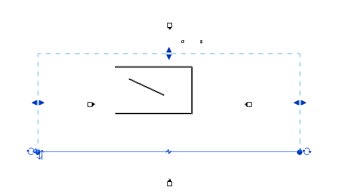

Elevation and Section Views
Here are some questions handled by Joe Ye, on creation of and line work in elevation views and the cut plane definition of a section view.
Question: There are different specialised kinds of views derived from the Autodesk.Revit.Elements.View class, and I see several methods in the Revit API to create some of these, such as 3D, Plan, Section, Sheet and Drafting. However, I cannot find a method to create an Elevation View. How can I do that?
Answer: Unfortunately, the Revit API currently does not provide any method to create an elevation view. At the moment, you can use the NewViewSection method to create a vertical section view very similar to an elevation view. By using a large bounding box which does not intersect with the building model, it can display the same view as an elevation view:

Question: Once I have created an elevation view, how would I change the line work of certain elements in that view? In the user interface, Revit provides the Linework tool in the ribbon for this action. How can I achieve this through the API?
Answer: As regards modifying the line work displayed in an elevation view, you can use the CutLinePatternOverrideByElement method on the View object to set the line weight for specified elements. For more information about this method, please see the Revit API help file RevitAPI.chm file in SDK.
Question: How can I get the cut plane definition from a section view programmatically? I just need any point inside the cut plane and the normal vector of the plane to continue to do some other calculations.
Answer: The section view class provides the properties you need. The Origin property of a section view is a point in the world coordinate system or WCS located in the cut plane of the section view. The ViewDirection property of a section view returns a WCS vector indicating the direction towards the viewer. You can use the section view Origin as the cut plane origin, and the ViewDirection as its normal vector. Depending to your usage, you might need to reverse the direction of the ViewDirection.
Thank you very much Joe for these answers!